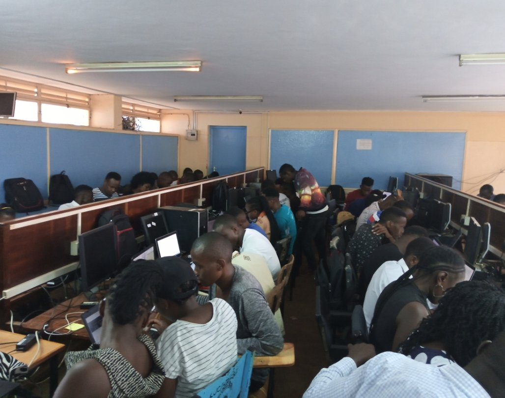
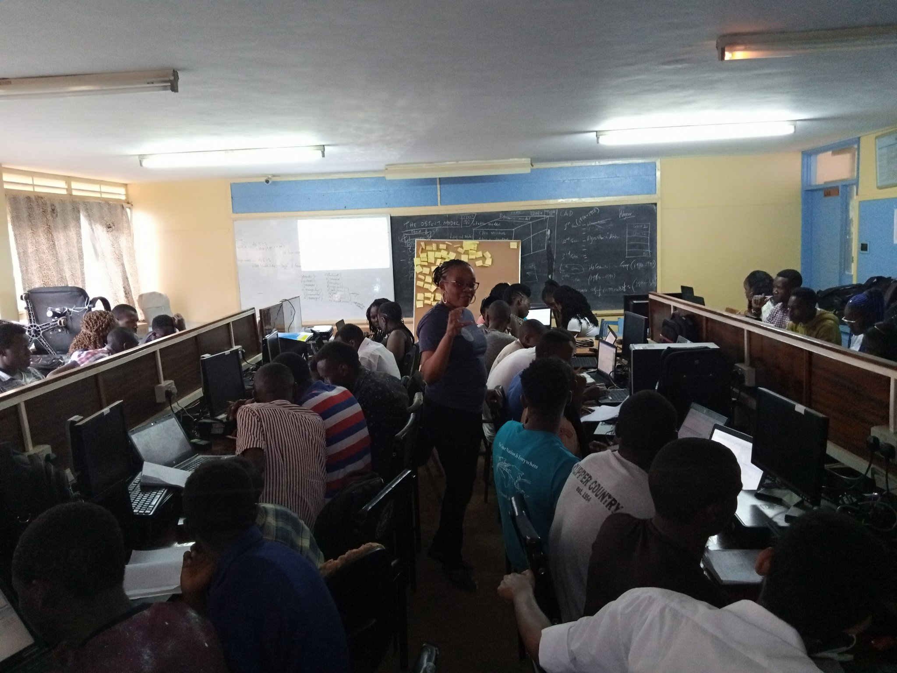
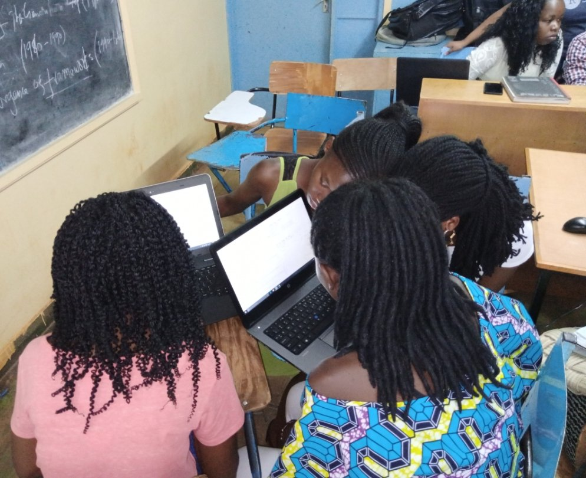
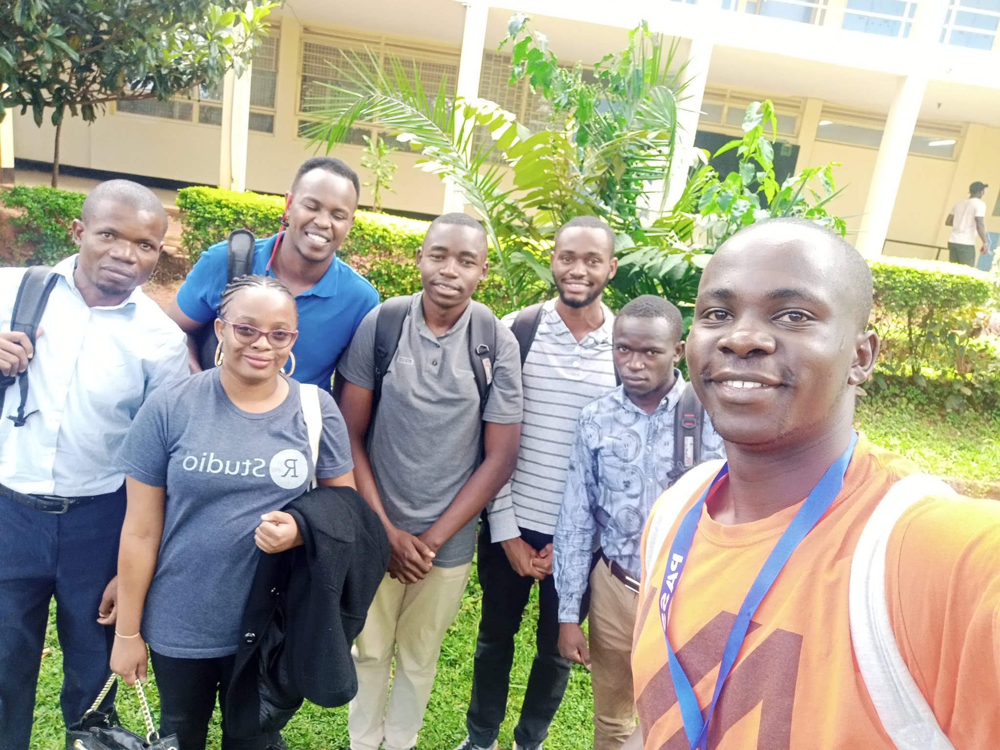

Kisii University: Inroduction to the tidyverse

One of the goals of #NairobiR was to develop the much-needed R skills in interested individuals in Kenya and train highly competent R users who would not only inspire a new generation of data scientists and R programmers in the country, but also place Nairobi city in global map of the pool of expert R users.
We sought to do this in two ways:
Hold monthly meetups where we invite experienced R users, data scientists and R programmers from within the country as well as from the continent to give short and focused trainings/talks on a variety of R topics and domains.
Visit campuses and hold one day trainings, enlightening students about the amazing things that R could do, beyond what was taught in class.
In February 2020, I got a chance to visit Kisii University, located 319.7 km from the capital, Nairobi. The journey took me approximately 6 hours.
I was invited by Terrence Indagua, on behalf of the Pure and Applied Sciences Students Association (PASSA), to give a one and a half days training on introduction to the tidyverse.The training session was attended by students from various courses, e.g Bsc.Statistics, Bsc.Pure Mathematics amongst others. The turnout was huge, such that the venue was full to capacity. I could read the enthusiasm on the students faces…they were here to learn ❤️, ❤️, ❤️, ❤️).

I started the session by asking the students to note down, on yellow stickers, what they wanted to have learnt by the end of the session. This was really important since I needed to set the expectations early enough. 1 and a half days was too short a time, to cover the whole R ecosystem.

As much as I would have wanted to cover the whole of tidyverse, I only ended up covering data manipulation using dplyr and tidyr on day 1, and data visualization using ggplot2 on day 2. I often gave small exercises, and asked students to work in groups. This was very important, as those who were lagging behind could consult with their peers who were up to speed with the content I was sharing.

Some students would have loved that I covered statistical inference in R, but again, the time was too short.
As one Greg Wilson taught me, it is always good to request for feedback from participants, after a raining session. So at the end of the second day’s session, I sent out a form requesting participants to anonymously provide feedback from the training. As expected, I got both positive and negative feedback.
What did you like about the content delivered?
“the fact that she can’t move forward if someone has not get the concept. It was well delivered”
“The content was okay, it will be of beneficial to us especially those who were very keen”
“you had knowledge and content on what you delivered keep it up it was nice.”
“The way in which Shelmith explains into details”
What did you not like about the content delivered?
“In the beginning you went too fast that we didn’t have time to download the required s/w and hence it became little bit difficult to coupe up”
“We were not taught about how to apply z,t and f test using R.”
What did you like about the mode of delivery?
“How you walked around to ensure that we all on the same page”
“The facilitator was very friendly making it easy to ask and get answered”
What did you not like about the mode of delivery?
“it concentrated more on the guys who are starters”
“Some people were given more attention than others”
“it did not cover my area of interest”
“Your speed”
Well, I have learnt how to take negative feedback kindly, so next time I will try mind my pace, and ensure that I am not biased towards certain participants.
Quick wins from the training:
The students formed an R club, where they meet often to discuss different R concepts.
We got invitations to carry out similar trainings in other different campuses in Kenya and Tanzania, (well, this will have to wait, due to Covid19).
Some students took it upon themselves to learn something new in R, everyday.

My hope and prayer is that at least one of the participants gets an entry or mid level job, based on what they learnt in the two days.
Until next time, cheers!!!
